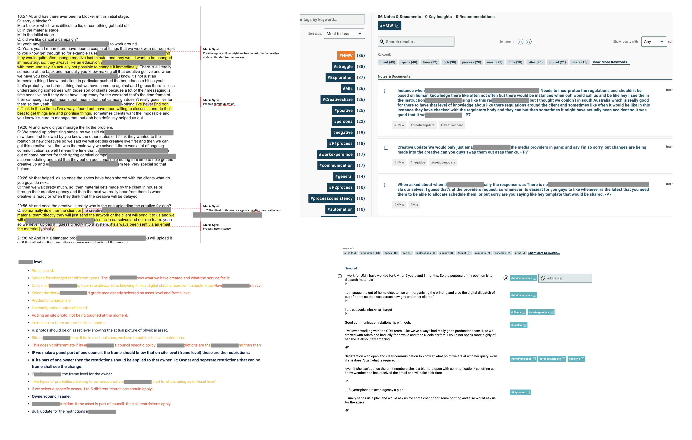
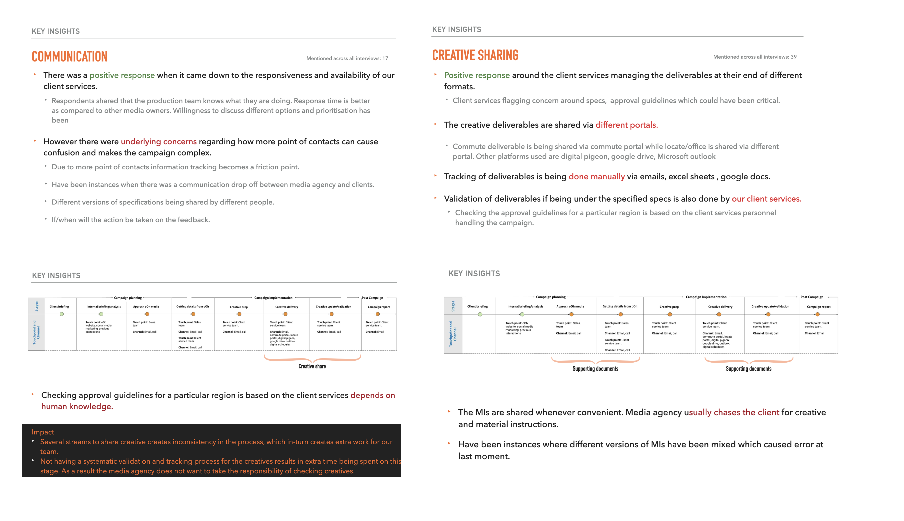
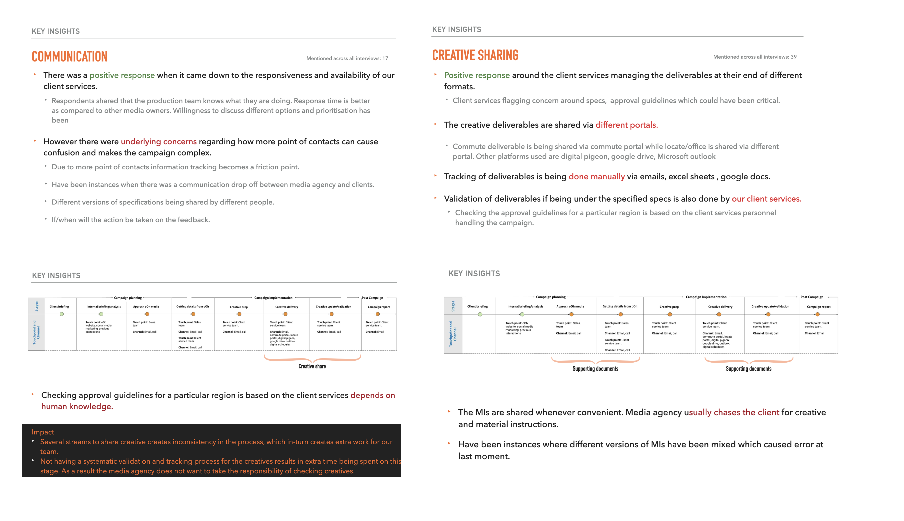

Client self-serve portal
Summary
Problem statement
Curently the creative delivery process for clients is being controlled by our team. However, our team tackles one part of delivery while customers are performing 10-15 steps prior to handing over the creative to us.Customers are doing extra work and have to deal with lack of control and lack of visibility around their campaign scheduling. There is a huge opportunity to save customers time and automate the process.
Who is affected
Media ageny, creative agency, cleints
What is the problem? What are the struggles and what pain point(s) need to be relieved?
Clients chasing all the information.
Clients compiling all the files and information.
Checking all the specs/deadlines.
Documenting manually how creative needs to be run.
Sharefile all the files.
Communicating it to us via emails and phones calls back and forward.
Where does it happen
Online and manual
Why does it matter
We have a unique opportunity to schedule creative for all network in a simple customer friendly way. Our move to drive customers to control their scheduling in OTP will address our need for significant resourcing increases to support our ever-increasing volume and complexity of campaigns that need to be delivered.
Objective of research
Understand our campaign delivery current process.
Have a vision of our desired future process.
Understand what processes are in our internal scheduling platform vs. live outside of our internal scheduling platform.
Understand what do we need to add to our scheduler to provide a direct access solution to customers
Research methodology
For this project, I decided on using two methods
1. One-one interviews
2. As-is analysis of the current process.
The method of sampling chosen was purposeful sampling. Since this research was around a specific area, so it was important to find and talk to people who have intensive experience in this area. Internal and external stakeholders understood the importance of this research and showed willingness to participate by being available. They were able to share their experiences and opinions in an articulate, expressive, and reflective manner.
Interview script
Out of 18 invites sent, seven clients were interviewed. The interviews were carried out on teams as it was the quickest option to get hold of clients when they were available. All the interviewees were sent consent form before the session began which they had to sign and return in order for me to record the session. In all the sessions I was the main lead but I invited business analysts and developers to accompany me as observers and note takers. The structure of the interview was semi structured because I was trying to understand the process from their perspective and figure out the pain points. All the interviews were transcribed and colour coded after every session so that I could tag the information later on and group them accordingly. Platform Aurelius Lab was used to tag the content. Below is a glimpse of interview notes, colour coding and tagging done. .

Analysis
After every 3 interviews, I held a mini synthesis session. Listened to the interviews, colour coded them and tagged the data. I used simple colour coding techniques and for tagging I used Aurelius’. The reason I did this mini-synthesis after few interview was that I knew that 9 sessions can get overwhelming. In the end, it was easy for me to get an idea of the themes and trends emerging.
Common trends
After transcribing all the interviews, colour coding it and tagging it. Few common themes surfaced such as:
1. Communication: This includes all communication from our company to media agencies/creative agencies/clients. (mentioned 17 times)
2. Creative sharing: How the creative deliverables are shared and updated with our team. (mentioned 39 times)
3. Supporting documents of scheduling: How documents such as schedules, site specifications, instructions for the creative for a campaign are shared. (mentioned 32 times)
4. Process visibility and inconsistency in process:Transparency between departments amongst media agency, creative agency and our company. Visibility across all, of every stage every of creative delivery process. (mentioned 15 times)
Deliverables
After synthesizing each session, I put together a report for the session. The objective of the report was to give a high-level overview of how the interviews went, what were the key take aways and pain points when it came to creative scheduling. In the report I also included links to the transcribed color-coded scripts. Other deliverables included customer journey map (which needs to be validated later).
 

My recommendations
Based on the interviews, and sessions with the product owners, recommendations were made to the business.- Streamlining the process of creative delivery giving visibility to every stake holder where the process is at and at what stage.
- Increase communication by automating reminders , notifying clients for deadlines of deliverables .
- Introducing service level agreements on the intensity of update requests and deliverables handover.
- Automate and standardise the tracking of creative instructions, site specifications and schedules.
Limitations
Like every project, it had some limitations and learnings.
In this research some of the limitations were :
- Online interviews vs face to face interviews was new to experiment with. Was unable to ask respondents to draw out the process.
- Unavailability of many clients affected the sampling size.
- Due to unavailability of information around creative delivery a lot of time was spent in understanding the process and analysing the unknowns.
- Challenging to remove my bias while summing up the analysis.